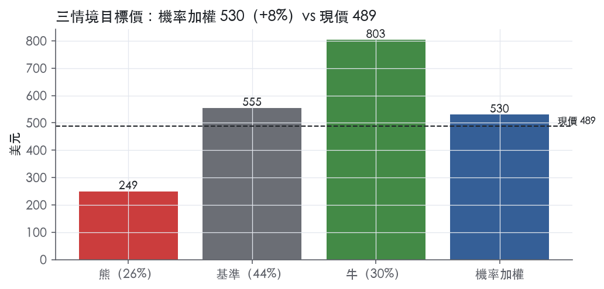
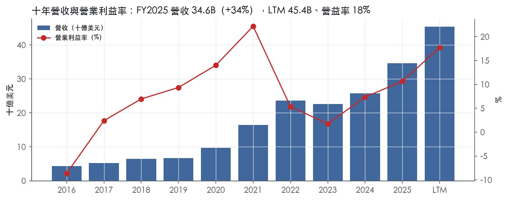
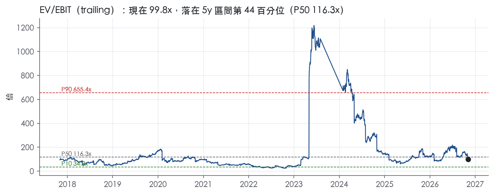
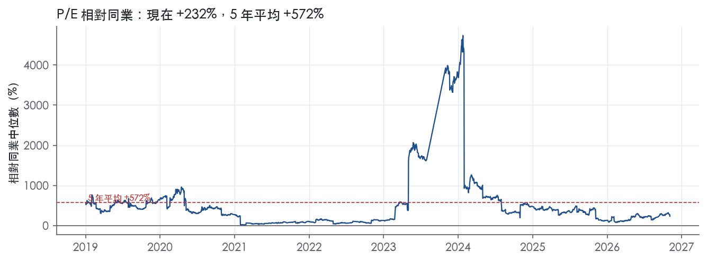
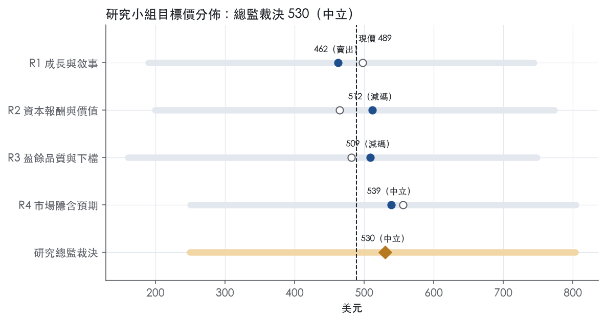
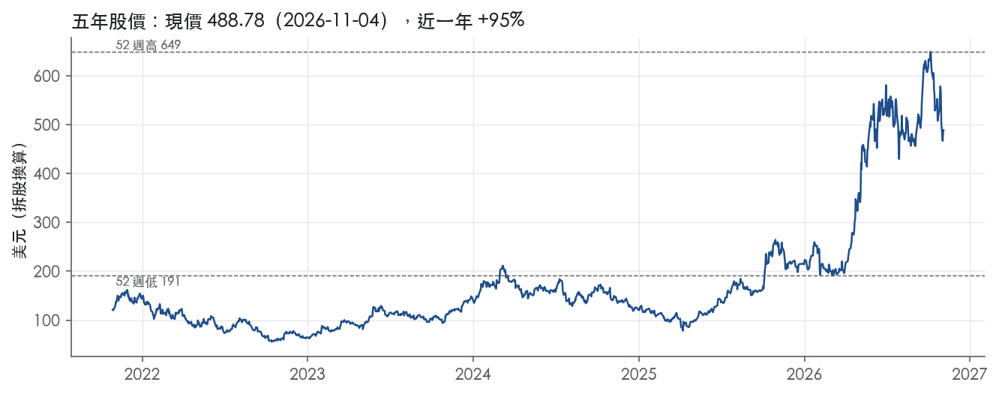

評等總表 › 資訊科技 › AMD
盈餘上修股價下跌，相對同業小幅看多｜評等 中立｜目標價 530
| 報告日 | 評等 | 目標價 | 當時股價 | 超額報酬 |
|---|---|---|---|---|
| 2026-11-04 | 中立 | 530 | 489 | -1.5% |
| 2026-10-09 | 減碼 | 608 | 608 | -9.9% |
| 快評 | 動作 | 結論 |
|---|---|---|
| 2026-11-03 | 提前重開研究小組 | 獲利高於預測，Q4指引觸發重評 |
| 評等 | 中立 |
| 12 個月目標價 | 530 美元 |
| 現價 | 488.78 美元（2026-11-04） |
| 預期報酬 | 股價 +8.4%＋股息 0.0%＝總報酬 +8.4%；同業籃門檻 10.0%，超額 -1.5% |
| 估值方法 | EV/EBITA 39.0x，套在第 5–8 季的EBITA（也就是一年後的未來四季） |
| 三情境 | 熊 249／基準 555／牛 803 |
| 研究流程 | 四位研究員兩輪辯論＋研究總監裁決 |
| 資料來源 | SEC EDGAR XBRL、Tiingo、FRED（全免費） |
盈餘上修股價下跌，相對同業小幅看多（研究總監裁決，四位研究員兩輪辯論後）
評等 中立｜12 個月目標價 530 美元（總監三情境機率加權 550 與研究員中位數 510 各半）｜現價 488.78（2026-11-04）
預期報酬：股價 +8.4%＋股息 0.0%＝總報酬 +8.4%。同業籃門檻 10.0%，超額 -1.5%。
估值方法：EV/EBITA 39.0x，套在第 5–8 季的EBITA（也就是一年後的未來四季）。三情境：熊 249（26%）／基準 555（44%）／牛 803（30%）。
立場看多而評等中立：評等看的是「預期總報酬 8.4% − 同業籃門檻 10.0%」＝超額 -1.5%，不是絕對漲跌；看多但超額不足，代表上檔已被同業的預期報酬抵銷。
什麼會讓研究總監改變看法：Q4 FCF 未回到 1.56B 且總債務續升，或 Q1'27 指引低於 15B，熊機率上調到三成以上、立場回中性；程式確認 Q5–Q8 EBITA 已含攤銷加回，倍數回 36x；FY2026 10-K 揭露 GW 協議含最低採購承諾或新增第二家 GW 級客戶，倍數上調到帶 P75 口徑。
| 過去四季（實際，FY2026Q3） | 未來四季 | 第 5–8 季 | 第 9–12 季 | |
|---|---|---|---|---|
| 營收（B） | 45.4B | 70.4B | 91.6B | 105.3B |
| 營收成長 | 41.9% | 55.0% | 30.0% | 15.0% |
| 營業利益率 | 17.7% | 24.0% | 26.0% | 26.0% |
| EPS（美元） | 4.60 | 8.66 | 11.93 | 13.40 |
| EPS 成長 | 127.4% | 88.0% | 37.8% | 12.3% |
| 每股股息（美元） | — | 0.00 | 0.00 | 0.00 |
| P/E（現價） | 106.2x | 56.5x | 41.0x | 36.5x |
| 股息殖利率（現價） | — | — | — | — |
過去四季為申報數字；預測為研究總監的假設、程式計算。倍數與殖利率都用現價計算，用來看現價對應各期獲利的高低。
| 項目 | 上次（2026-10-12） | 這次（2026-11-05） | 變動 |
|---|---|---|---|
| 評等 | 減碼 | 中立 | 變動 |
| 機率加權目標價（美元） | 608 | 530 | -12.9% |
| 超額報酬 | -9.9% | -1.5% | +8.4 pp |
| 目標倍數 | 52x | 39x | — |
| 未來四季營收成長 | 42.0% | 55.0% | +13.0 pp |
| 未來四季營益率 | 20.0% | 24.0% | +4.0 pp |
| 未來四季 EPS（美元） | 6.04 | 8.66 | +43.2% |
| 熊／基準／牛機率 | 21／51／28 | 26／44／30 | — |
程式計算；「未來四季」各自從當次報告的資料起點算。研究總監逐點說明見第八章「與上次報告比較」。
| 情境 | 機率（歷史） | 故事 | 未來四季營收成長 | 第 5–8 季營益率 | 倍數 | 目標價 | 股價漲跌 |
|---|---|---|---|---|---|---|---|
| 熊 | 26%（21%） | 對應風險表第 1 條（客戶集中／遲付或砍單）疊加第 2 條（AI 需求消退）：資料中心年增自 97% 急墜，SBC 與攤銷固定費用去槓桿，倍數回帶 P25；前兆為 Q3 FCF 0.55B、債務升至 7.08B、對客戶發行權證；觸發 2027-02 Q4 財報 | 38.0% | 20.0% | 30.0x | 249 | -49.0% |
| 基準 | 44%（47%） | Q4 達 17B 指引、2027 前段延續季增，Q5–Q8 成長 30%、營益率 26%，一年後市場看到 15% 成長而把倍數收斂到帶 P50 加口徑差 | 55.0% | 26.0% | 39.0x | 555 | 13.5% |
| 牛 | 30%（32%） | Helios 成為非 Nvidia 陣營標準機架，五家首批客戶加碼、OpenAI 第二階段 GW 提前且現金如期回收，一年後倍數停在帶 P75 附近 | 62.0% | 29.0% | 46.0x | 803 | 64.4% |
目標價由程式依研究總監的驅動與倍數計算；機率由研究總監給定。括號內是歷史頻率：把這檔股票過去十年 12 個月報酬的波動形狀，置中在基準情境，結果落在各情境附近的比例。

四位研究員用不同方法各自估值，回應研究總監的質疑後交出第二輪，最後由總監逐點裁決。各研究員的主張見第七章，裁決理由見第八章，完整論證見《研究底稿》。
| 立場（一輪→二輪） | 加權目標價（一輪→二輪） | 評等（一輪→二輪） | 第二輪倍數 | 熊～牛目標價 | |
|---|---|---|---|---|---|
| R1 成長與敘事 | 中性→看空 | 498→462 | 減碼→賣出 | 34.0x | 190～744 |
| R2 資本報酬與價值 | 看空→看空 | 465→512 | 減碼→減碼 | 42.0x | 199～773 |
| R3 盈餘品質與下檔 | 中性→看空 | 482→509 | 減碼→減碼 | 38.0x | 161～748 |
| R4 市場隱含預期 | 看多→看多 | 555→539 | 中立→中立 | 38.0x | 250～804 |
| 研究總監裁決 | 看多 | 530 | 中立 | 39.0x | 249～803 |
目標價由程式依各自的驅動與倍數計算；評等＝機率加權總報酬 − 同業籃門檻。
AMD 是一家以 x86 CPU、GPU 與資料中心加速運算為核心、近兩年靠 AI 基礎設施需求重新定義成長曲線的半導體設計公司。「AMD drives innovation in high performance and AI computing to solve the world's most important challenges. AMD technology powers billions of experiences across cloud and AI infrastructure, embedded systems, AI PCs and gaming.」¹公司本身不做晶圓製造，產品委外給台積電、GlobalFoundries、UMC、三星等代工，「We utilize Taiwan Semiconductor Manufacturing Company Limited (TSMC) for the production of wafers for our HPC, FPGA and adaptive SoC products and GLOBALFOUNDRIES Inc. (GF)...」¹，封測則交給亞太地區的 ATMP 夥伴與兩家合資廠（Tongfu、SPIL、KYEC）¹。客戶端涵蓋雲端巨頭、OEM／ODM、PC 製造商、遊戲主機廠與嵌入式系統整合商，橫跨資料中心、PC、嵌入式三大終端市場。
公司自 2025 年起整併為三大可報導分部：資料中心、客戶與遊戲（合併）、嵌入式¹。「Our three reportable segments are: the Data Center segment...the Client and Gaming segment...and the Embedded segment...」¹
資料中心分部主力是 EPYC 伺服器 CPU 與 Instinct 系列 AI 加速器（MI300/MI325/MI350/MI450），並擴展至 Pensando DPU 與 AI NIC 網路產品、FPGA／Versal 自適應 SoC¹。這是目前成長最快、規模已超越其他兩個分部總和的引擎——FY2026Q3 資料中心單季營收 8.5B 美元，年增 97%²，FY2026Q2 為 6.7B 美元、年增 107%，占公司當季營收 58%³。
客戶與遊戲分部下的客戶業務以 Ryzen／Ryzen AI／Ryzen PRO／Threadripper CPU 與 APU 為主，鎖定桌上型、筆電與商用 PC；遊戲業務則包括為 PlayStation 5、Xbox Series S/X 設計的半客製 SoC，以及 Radeon RX／PRO 獨立顯卡¹。FY2026Q3 該分部營收 3.7B 美元、年減 8%，其中客戶業務 2.9B 美元年增 7%，遊戲業務僅 773M 美元、年減 40%（因半客製與顯卡營收下滑）²，顯示客戶端成長靠 Ryzen，遊戲端因主機世代後期而走弱。
嵌入式分部產品為嵌入式 CPU／APU／FPGA／adaptive SoC，應用於航太國防、汽車、工業、通訊基礎設施等¹。FY2026Q3 營收 1.1B 美元、年增 29%，由航太國防、汽車、通訊與工業終端市場帶動²，是三個分部中規模最小但成長穩定的一塊。各分部對營收比重的完整歷史拆分 10-K 未揭露。
客戶集中度高且公司自己也在風險警語中承認「a small number of customers will continue to account for a substantial part of AMD's revenue and receivables」¹。資料中心客戶以超大規模雲端業者、OEM、ODM 與系統整合商為主¹；客戶與遊戲分部客戶是 PC OEM、獨立經銷商，以及為晶片組服務的 ODM¹；嵌入式則透過直銷與經銷商／OEM 夥伴網路銷售，並正在建立 VAR／ISV 生態圈以支援 Alveo 產品¹。銷售通路包含直接銷售團隊、OEM、獨立經銷商與銷售代表，涵蓋境內與國際市場，訂單基礎為客戶預測，一般不含最低採購量承諾¹。公司並預期國際銷售將持續占總營收重要部分¹，地區別營收細分 10-K Item 1 未揭露，須查財務附註。
FY2025Q4（2025年12月27日結算，推導）營收 10.27B 美元、年增 34.1%，毛利率 54.3%（dv 衍生）。
FY2026Q1 營收 10.25B 美元，季減持平、年增約 38%（dv 衍生），毛利率約 53%（GAAP）；公司在 Q2 財報稿回顧 Q1 時列出 GAAP 毛利率 53%、營業利益 1.48B 美元³。
FY2026Q2：「Second quarter revenue was $11.5 billion, gross margin was 54%, operating income was $2.0 billion, net income was $2.3 billion and diluted earnings per share was $1.38.」³資料中心營收 6.7B 美元、年增 107%，占公司營收 58%³。CEO Lisa Su 表示：「We enter the second half with strong momentum as EPYC demand accelerates, Instinct deployments scale and Helios begins to ramp.」³財測方面，公司當時給出 Q3 指引：「AMD expects revenue to be approximately $13 billion, plus or minus $300 million...Non-GAAP gross margin is expected to be approximately 56%.」³
FY2026Q3：「Third quarter revenue was $13.4 billion, gross margin was 54%, operating income was $2.8 billion, net income was $2.4 billion and diluted earnings per share was $1.46.」²資料中心營收創紀錄達 8.5B 美元、年增 97%²，客戶與遊戲合計 3.7B 美元年減 8%，嵌入式 1.1B 美元年增 29%²。CFO Jean Hu 指出：「Third quarter revenue grew 45% year-over-year to a record $13.4 billion, while non-GAAP earnings per share grew 74%, demonstrating the significant operating leverage in our business model as our Data Center business drives scale.」²Q4 指引：「AMD expects revenue to be approximately $17 billion, plus or minus 3%...Non-GAAP gross margin is expected to be approximately 55%.」²
四季趨勢清楚：營收加速、毛利率在 Q2 跌破 40%（Q2'25 因 MI308 出口管制存貨減損 800M 美元³）後已修復至 53-54% GAAP 區間，營業槓桿明顯放大。
公司將 2025 年優先策略定為「accelerating growth in our Data Center segment」，並稱 2025 年 Instinct MI350X 系列與第五代 EPYC 的需求強勁¹。公司強調全端布局：「We believe that AI systems will require not only powerful chips, but also full-stack innovation across compute, networking, systems architecture and software.」¹2025 年併購 ZT Systems 以取得 AI 基礎設施設計能力，並出售其製造業務給 Sanmina¹。10 月與 OpenAI 簽署 6GW GPU 部署協議，首批由 MI450 系列供應，「This multiyear strategic partnership with OpenAI demonstrates our continued execution of hardware, software and full-stack solutions roadmaps.」¹最新一季持續擴大「superintelligence」生態圈：Anthropic、Meta、Microsoft、OpenAI、Oracle Cloud Infrastructure 已在首批 AMD Helios 機架上運行工作負載，並宣布收購 World Labs 與 Taalas 以補強模型研究與推理晶片能力²。CEO Lisa Su 在最新財報稿中表示：「we expect growth to accelerate further in the fourth quarter as we scale Helios and 'Venice' production...we are confident in our ability to sustain very strong revenue growth and expanding profitability over the coming years.」²
AMD 的故事已經從「對 Intel 的 CPU 份額戰爭」轉成「資料中心 AI 加速器對 Nvidia 的挑戰者」，Instinct／Helios／ROCm 生態系的執行力是股價的核心變數。客戶與遊戲分部（尤其遊戲業務）處於主機世代後期的結構性下滑，對集團毛利率貢獻正在邊緣化，資料中心已是真正的利潤引擎。風險在於客戶集中度高、對台積電先進封裝與 CoWoS 產能的依賴，以及地緣政治（出口管制曾在 Q2'25 造成 800M 美元存貨減損）仍是营收可見度的主要變數。

AMD 評為窄護城河。它有兩項真實的優勢：一是 x86 架構與專利交叉授權形成的進入門檻，二是 FPGA 設計工具與半客製共同開發形成的轉換成本。但 FY2022 起 ROIC 每年都低於資本成本，數字不支持給寬。趨勢判為變寬，依據是毛利率創十年新高、資料中心放量帶來營業槓桿，而不是 ROIC 已回到資本成本之上。我們有把握未來 5 年 ROIC 回到並維持在資本成本之上。10 年則沒有把握，因為 AI 加速器的領先者仍是對手，客戶自研晶片也在擴大。
有證據的來源只有無形資產與轉換成本兩類。網路效應、成本優勢、效率規模在原文找不到足夠證據，不列。
無形資產（專利、授權、架構）
轉換成本
不列網路效應與成本優勢的理由
只看得到一半：毛利率支持「優勢在強化」，ROIC 則與寬護城河的主張衝突，這正是只給窄的原因。
ROIC：平均值好看，但被早期低資本基期墊高
毛利率與營益率：方向支持「變寬」
為什麼維持窄、不下修為無
最大的侵蝕來源是客戶自研晶片，它直接縮小資料中心的可服務市場。
目標倍數相對同業應持平，不給護城河溢價：優勢真實但屬窄，且 FY2022 至 FY2025 的 ROIC 每年都低於資本成本，超額報酬的持續期間只能以 5 年計，不能以 10 年計。目前 EV/Sales 位於近五年 89.9% 分位（現在分位），高倍數應由成長假設單獨證成，不應再疊加護城河溢價。若年度 ROIC 回到資本成本 10.0%以上並維持，再重新評估是否上調為寬並給予溢價。
| 指標 | 最新 | 十年平均 | 標準差 | 最低 | 最高 |
|---|---|---|---|---|---|
| ROIC | 6.7% | 26.3% | 24.9% | 0.8% | 77.7% |
| 毛利率 | 49.5% | 42.0% | 7.8% | 23.2% | 49.5% |
| 營業利益率 | 10.7% | 7.1% | 7.7% | -8.6% | 22.2% |
| FCF 利潤率 | 19.4% | 7.5% | 7.6% | -2.0% | 19.6% |
| ROE | 7.2% | 18.6% | 21.5% | -6.2% | 57.5% |
程式計算。資本成本代理值（10 年債＋5%）：10.0%；ROIC 平均減資本成本：16.3%；ROIC 有資料的 9 年中，高於資本成本 5 年。
AMD的核心現金生成能力沒有問題，LTM營業現金流／淨利1.20x、FCF／淨利0.93x，三年平均甚至高於1x，應計比率常年為負、不是靠應計撐盈餘。但SBC／營收與股數稀釋兩項黃燈反映盈餘有一部分是用股權稀釋換來的成長，加上（股利＋回購）／淨利三年平均66.1%、十年平均106.9%顯示公司長期用超過當期淨利的金額在回饋股東。這些不是造假或現金斷鏈的紅旗，但足以讓盈餘品質從「高」降到「中」，估值時GAAP盈餘不能直接全額採用。
現金是跟上的，而且跟得很穩。LTM營業現金流／淨利1.20x、近三年平均1.86x、十年平均1.08x，三個時間窗都站在綠燈的≥1.00x門檻之上。扣掉資本支出後的FCF／淨利LTM 0.93x，雖然略低於3年平均1.44x，但仍高於0.90x的綠燈線，差距主要是FY2026單季資本支出與營運資金波動所致。應計比率LTM為-1.7%、近三年-2.6%，長期均低於0.6%的十年均值，代表淨利沒有系統性地靠應計項目墊高。應收帳款成長減營收成長為-32.4pp、存貨成長減營收成長為+3.8pp，兩者都在±15pp的紅線內，顯示FY2025營運資金沒有在吃掉盈餘。整體看，GAAP淨利有真實現金流支撐，不是紙上富貴。
Q3'26 GAAP淨利2,428M美元、每股1.46美元，非GAAP淨利3,471M美元、每股2.09美元，差距主要來自五項調整²。股權薩酬（SBC）在營業利益層級加回523M美元、每股0.31美元²；收購相關無形資產攤銷加回534M美元、每股0.32美元²；warrant負債公允價值變動加回1,097M美元、每股0.66美元，是本季最大單一調整項²；所得稅費用調整扣除1,073M美元、每股0.64美元用以反映上述加回項目的稅務影響²；另有長期投資利得扣除67M美元、每股0.04美元²。SBC與攤銷是每季都會重複出現的真實經濟成本，不該全部加回；warrant公允價值變動純粹是客戶股權工具按市值重估的非現金項目，波動性大且與營運表現無關，列為一次性／非經常性較合理。因此雖然非GAAP每股成長74%看起來亮眼，估值時仍該把SBC視為真實稀釋成本扣回一部分，不能全盤接受非GAAP數字。
槓桿不是這家公司的限制因素。淨負債為-8.70B美元（淨現金），EV 792.90B美元遠高於市值的槓桿貢獻為負。利息保障倍數LTM 46.8x、三年平均17.5x、十年平均21.2x，均遠高於8.00x的綠燈線，付息能力完全不是問題。股東回饋端則偏積極：（股利＋回購）／淨利LTM僅2.9%，但近三年平均66.1%、十年平均106.9%，代表過去十年多數年份回購加股利的支出超過當年淨利，是用資產負債表（而非單年盈餘）在支應回饋。稀釋股數年變動LTM僅0.1%、近三年1.4%，相較十年平均8.1%已大幅收斂，顯示近年SBC發放的稀釋效果已被回購部分抵銷。整體資本配置方向是用淨現金餘裕支撐回購，槓桿沒有限制估值倍數的空間。
SBC／營收黃燈（LTM 4.4%、三年5.4%，高於3.0%綠燈線）：這是真實但非一次性的成本，Q3'26新聞稿顯示SBC在營業利益層級仍加回523M美元²，且近三年均值高於十年均值3.5%，顯示SBC強度隨公司規模擴大而上升而非下降；估值應對GAAP盈餘打折反映這項成本，不接受非GAAP全額加回。
稀釋股數年變動黃燈（十年平均8.1%，超過3.0%紅線；但LTM僅0.1%）：十年均值偏高主要反映FY2021-FY2023期間因收購（如Xilinx換股）與SBC發放大量增發股數，近三年已明顯收斂到1.4%、LTM甚至接近零；這是歷史性、已被近期回購抵銷的問題，不是當前的紅旗。
（股利＋回購）／淨利黃燈（十年平均106.9%，超過100%可能代表舉債回饋）：公司長期不配息，10-K明確指出「AMD’s expectation that it will not pay dividends in the near future」¹，回饋股東全數來自回購；而淨負債持續為負（淨現金）顯示回購是用自由現金流與現金餘額支應,而非舉債；因此這個比率超過100%是回購時點與淨利波動（尤其FY2022-FY2023淨利因SBC與攤銷大增而壓低）造成的分母效應，不是財務壓力訊號。
淨利率跳動紅旗（FY2016→FY2017 +11pp、FY2019→FY2020 +20pp、FY2021→FY2022 -14pp）：這三段跳動對應公司營收結構由虧損轉盈、疫情期間雲端需求爆發、以及Xilinx收購後SBC與攤銷大增侵蝕GAAP利潤率（量化底稿年度表）；10-K未在本次節錄段落中提供逐年一次性項目明細，但FY2022毛利率44.9%與FY2023毛利率46.1%相對穩定，顯示FY2021→FY2022的淨利率下滑主要發生在營業費用與非營業項目（如收購攤銷）層級而非核心毛利惡化（量化底稿年度表）；這三個紅旗屬於可解釋的結構性轉折（轉虧為盈、疫情需求、併購會計），不是盈餘操縱訊號，但確實佐證了GAAP淨利對併購攤銷與SBC的敏感度，支持「中品質」而非「高品質」的結論。
估值應以GAAP盈餘為基礎、對SBC部分加回但打折處理，不建議直接套用非GAAP每股2.09美元。Warrant公允價值變動（0.66美元／股）與長期投資利得屬於非經常性，可從GAAP數字中剔除，但SBC與攤銷是重複出現的真實成本，應保留在估值分母裡或在應用非GAAP倍數時另外扣減。槓桿端完全不是限制——淨現金狀態下利息保障46.8x，不需要因財務風險而壓低估值倍數，目前17.5x EV/EBITA、106.2x P/E的高倍數主要反映成長預期而非盈餘品質溢價，估值重心應放在Data Center營收能否延續97%年增速，而非盈餘品質折價。
| 項目 | LTM | 近三年 | 十年 | 燈號 | 規則 |
|---|---|---|---|---|---|
| 營業現金流／淨利 | 1.20x | 1.86x | 1.08x | 綠 | ≥1.00x 綠、<0.80x 紅 |
| 自由現金流／淨利 | 0.93x | 1.44x | 1.15x | 綠 | ≥0.90x 綠、<0.60x 紅 |
| 應計比率（(淨利−CFO)／平均總資產） | -1.7% | -2.6% | 0.6% | 綠 | ≤0.0% 綠、>5.0% 紅 |
| SBC／營收 | 4.4% | 5.4% | 3.5% | 黃 | ≤3.0% 綠、>8.0% 紅 |
| 淨負債／EBITDA | — | -0.80x | -0.61x | 綠 | ≤1.50x 綠、>3.00x 紅 |
| 利息保障倍數（營業利益／利息） | 46.8x | 17.5x | 21.2x | 綠 | ≥8.00x 綠、<3.00x 紅 |
| 稀釋股數年變動 | 0.1% | 1.4% | 8.1% | 黃 | ≤0.0% 綠、>3.0% 紅 |
| （股利＋回購）／淨利 | 2.9% | 66.1% | 106.9% | 黃 | ≥50.0% 綠、<0.0% 紅 |
| 應收帳款成長 − 營收成長（FY2025） | -32.4pp | — | — | 綠 | ≤5pp 綠、>15pp 紅 |
| 存貨成長 − 營收成長（FY2025） | +3.8pp | — | — | 綠 | ≤5pp 綠、>15pp 紅 |
程式計算；燈號以 LTM（無則近三年平均）判定。
| 風險 | 觸發指標（看什麼數字、在哪裡看） | 對 EPS 的影響方向與粗略幅度 | 未來 12 個月發生機率（高／中／低） | 出處 |
|---|---|---|---|---|
| 客戶集中度／大客戶砍單或自研晶片 | 季報「a small number of customers account for substantial part of revenue」措辭是否重申；資料中心單季營收年增率（目前 97%）是否急墜；OpenAI／超大規模業者資本支出指引 | 負向、大：資料中心已是主要利潤引擎，EPS 槓桿集中於此 | 中 | 10-K 年報 FY2025 Item 1A（風險因素） |
| 半導體產業週期性下行／AI 需求消退 | 季度毛利率趨勢（現 54% GAAP）；Data Center 營收年增率；客戶存貨去化訊號 | 負向、大：公司明言「has incurred substantial losses in previous downturns」 | 中 | 10-K 年報 FY2025 Item 1A（風險因素） |
| 競爭對手（Nvidia／Intel）定價與結盟壓力 | Nvidia 資料中心 GPU 市占與價格策略公告；Nvidia-Intel 合作進展；AMD 資料中心毛利率是否落後指引 | 負向、中至大：公司點名 2025/9 Nvidia 投資 Intel 的合作可能「increase competition and pricing pressure」 | 中 | 10-K 年報 FY2025 Item 1A（風險因素） |
| 第三方晶圓代工（台積電）產能／良率依賴，含先進封裝瓶頸 | TSMC CoWoS／先進封裝產能新聞；AMD 資料中心出貨能否跟上 Q4 指引（營收約 17B，±3%）；毛利率是否偏離 55% 非 GAAP 指引 | 負向、中：產能不足會限制營收兌現，不影響毛利率結構但衝量 | 中 | ⁴＋² |
| 出口管制／地緣政治限制 AI 晶片銷售 | 美國商務部對中國或其他市場 AI 加速器出口新規公告；是否出現類似 Q2'25 MI308 存貨減損（當季 800M 美元） | 負向、中：曾造成單季非 GAAP 毛利率跌破 40% 附近區間 | 中 | 10-K 年報 FY2025 Item 1A（風險因素） |
客戶集中度是第一位風險，因為它直接寫在風險摘要第一條：「The loss of a significant customer may have a material adverse effect on us.」⁴公司明確承認「we expect that a small number of customers will continue to account for a significant part of our revenue and receivables in the future」⁴。業務概況章也指出資料中心客戶以超大規模雲端業者、OEM、ODM 為主，而 FY2026Q3 資料中心營收 8.5B 美元、年增 97%，已成為公司營業槓桿的主要來源²。10-K 同時警告「some of our customers are internally developing their own data center microprocessor products and accelerator products which could impact the available market for our products」⁴——這意味著最大的客戶同時也是潛在最大的競爭者，雙重曝險。監測方法是看單一客戶（如 OpenAI 6GW 合約的執行進度）是否出現延後或縮減的公告。
產業週期性排第二，因為公司自己承認「We have incurred substantial losses in previous downturns, due to substantial declines in average selling prices...and excess inventory levels」⁴。目前股價對應的估值已處於歷史高分位（EV/Sales 17.7x，位於 5 年 89.9% 分位），若 AI 需求成長放緩，评价重估的下跌幅度會比 EPS 本身下滑更大。觸發指標是連續兩季資料中心營收年增率明顯低於目前 97% 的水準。
競爭對手定價與結盟壓力是第三，10-K 直接點名「Intel uses its microprocessor market position to price its products aggressively」及「Nvidia leverages its market position in data center GPU, financial resources, and proprietary software ecosystem」⁴，並特別提到 2025 年 9 月 Nvidia 入股 Intel 的合作「may result in increased competition and pricing pressure for our products or could prevent us from participating in other opportunities」⁴。這條風險不是抽象的「競爭激烈」，而是有具體觀測點：Nvidia-Intel 合作若推出聯合平台產品，會是明確的訊號。
代工產能與先進封裝依賴排第四。公司不做晶圓製造，「We utilize Taiwan Semiconductor Manufacturing Company Limited (TSMC) for the production of wafers for our HPC, FPGA and adaptive SoC products」⁴，10-K 風險清單中亦列有「Essential equipment, materials, substrates or manufacturing processes may not be available to us」及「We may fail to achieve expected manufacturing yields」⁴。公司 Q4 指引營收約 17B 美元（±3%），年增約 66%、季增約 27%²，要兌現這種加速度，先進封裝（CoWoS 類）產能是否跟上是硬約束，不是需求問題而是供給問題。
出口管制／地緣政治排第五，機率設為中而非高，是因為公司已經歷過一次實質衝擊並消化完畢：Q2'25 因 MI308 相關存貨減損 67M 美元（出現在對帳表的「Recovery of inventory loss at contract manufacturer」行項）²，業務概況章提及的 800M 美元減損發生在更早的 2025 財年中（10-K 口徑）。10-K 列出「Government actions and regulations, including but not limited to export regulations, import tariffs and trade protection measures, may limit our ability to export our products to certain customers」⁴作為正式風險項，未來若規則擴大到資料中心加速器以外的產品線，衝擊會比過去更大。
AI 資本支出循環的融資可持續性——10-K 僅提到「customers may also lack, or be unable to, secure capital to fund their required AI infrastructure and may request alternative financing or deferred-payment arrangements from vendors and suppliers」⁴，但沒有量化 AMD 自身對客戶供應商融資或應收帳款展期的曝險。若超大規模業者資本支出循環因利率環境（目前 10 年期美債收益率 4.95%）轉趨保守而放緩資本支出，AMD 的應收帳款週轉與訂單能見度會比財報表面數字更早轉差，這點值得在財報電話會議追問 DSO（應收帳款天數）趨勢。
毛利率結構對產品組合（GPU vs CPU vs 遊戲／客戶端）的敏感度——財報已顯示遊戲業務 FY2026Q3 年減 40%、客戶業務年增 7%，兩者毛利率差異大但公司不拆分揭露。若資料中心成長趨緩、而低毛利的遊戲／半客製業務占比回升，集團毛利率可能比市場預期更快回落到 Q2'25 衝擊前的水準，這是估值模型裡容易被忽略的組合效應。
現價 488.78 對應 trailing（過去四季）P/E 106.2x、EV/EBITDA —、EV/EBITA 77.1x、EV/Sales 17.5x、FCF 殖利率 0.9%。主要估值倍數 EV/EBIT 現在 78.1x，落在5 年區間第 44 百分位（P10／P50／P90 = 27.3x／91.0x／513.2x）。（倍數口徑換算：ev_ebita 自家歷史不足，借 ev_ebit 的 5y 分位，乘上兩者現值比 0.783（ev_ebita 現在 78.1x ÷ ev_ebit 現在 99.8x）換算成 ev_ebita 口徑；下圖為換算前的 ev_ebit 原值。）

把程式的機械基準預測放到現價下，市場付的前瞻倍數是：EV/EBITA（未來四季） 75.8x、P/E（未來四季） 88.2x、EV/EBITA（第 5–8 季） 64.3x、P/E（第 5–8 季） 75.5x。反推 DCF 顯示市價隱含未來五年營收年成長 33.6%（WACC 9.0%、終值成長 3.0%、FCF 利潤率 19.5%，SBC 不加回）。
| 倍數 | 現在 | 5 年 P10 | 5 年 P50 | 5 年 P90 | 現在分位 | 全期 P50 |
|---|---|---|---|---|---|---|
| P/E | 106.2x | 37.0x | 108.6x | 407.3x | 47.3% | 114.5x |
| EV/EBITDA | 83.4x | — | — | — | — | 62.1x |
| EV/EBITA | 78.1x | — | — | — | — | 75.9x |
| EV/EBIT | 99.8x | 34.8x | 116.3x | 655.4x | 43.8% | 90.1x |
| EV/Sales | 17.7x | 5.6x | 8.9x | 17.7x | 89.9% | 8.0x |
| P/S | 17.9x | 5.7x | 9.0x | 18.0x | 89.9% | 8.1x |
| P/FCF | 115.1x | 36.7x | 73.2x | 207.4x | 73.4% | 94.6x |
trailing 倍數（股價 ÷ 過去四季）；分位以每個交易日計算。
同業籃：INTC, AVGO, AMAT, ADI, AMKR, FSLR（SIC 3674 同業 43 家中，CY2025 營收最接近的 6 家）。評等門檻 10.0%：同業「倍數不變下持有一年」的隱含報酬中位數（＝ FCF 殖利率 ×(1＋g)＋g，g 為 5 年營收年複合成長並夾在 −2%～8%），每家夾在 0～15%、P/E 低於 5 倍視為資料可疑而排除，中位數再限制在 10 年債到 10 年債＋5% 之間（同業原始中位數 10.4%）。
| 代號 | 市值 | 5 年營收 CAGR | 營益率 | ROIC | P/E | 5 年 P/E 中位數 | EV/EBITDA | P/FCF | 隱含報酬 |
|---|---|---|---|---|---|---|---|---|---|
| AMD | 801.6B | 28.8% | 17.7% | 6.7% | 106.2x | 108.6x | — | 113.6x | 9.0% |
| INTC | 309.4B | -7.5% | 2.9% | -1.1% | — | — | 21.2x | 82.1x | -0.8% |
| AVGO | 1,553.8B | 21.7% | 48.0% | 19.9% | 41.5x | 46.1x | 30.9x | 39.4x | 10.7% |
| AMAT | 293.2B | 10.5% | 29.6% | 35.9% | 31.9x | 20.7x | 30.2x | 52.1x | 10.1% |
| ADI | 196.8B | 14.5% | 35.5% | 6.2% | 48.3x | 48.7x | 29.5x | 39.9x | 10.7% |
| AMKR | 8.8B | 5.8% | 9.5% | 10.4% | 14.4x | 16.6x | 6.3x | — | 13.2% |
| FSLR | 20.9B | 14.0% | 37.7% | 22.1% | 11.3x | 20.1x | 7.8x | 89.8x | 9.2% |
| 同業中位數 | 12.3% | 32.6% | 15.2% | 31.9x | 20.7x | 25.4x | 52.1x | 10.0% |
全部 trailing，程式以各公司 SEC XBRL 與 Tiingo 行情計算；第一列為本檔。
P/E 相對同業中位數：現在 232.5%，過去 1 年平均 186.1%、3 年 664.8%、5 年 571.6%；EV/EBITDA 相對同業中位數：現在 555.1%，過去 1 年平均 448.0%、3 年 397.2%、5 年 —。

事後實現前瞻倍數帶（EV/EBITA，2018-11-12..2025-11-10）：P10／P50／P90 = 25.7x／35.9x／54.1x。它是每個交易日的股價除以之後四季實際實現的指標；一年後，今天的第 5–8 季正是那時的未來四季，所以這條帶是 12 個月目標價的同口徑倍數。因為用的是事後實際而非當時預期，過去成長超乎預期的公司這條帶會偏低。
程式的機械基準（成長率從過去四季年增率三年收斂到 6%、利潤率持平）用 事後實現前瞻 EV/EBITA P50 估值得到 277（-43.4%），市場現行前瞻倍數（現價 ÷ 基準 未來四季指標）一年後持平，套在基準 第 5–8 季指標得到 570。這兩個數字只是參考點，不是本報告的目標價；研究員對這個定價的回應在第七章。
下表是每位研究員第一輪（各自獨立）與第二輪（回應研究總監的質疑後）的結果。目標價全由程式依各自的假設計算。
| 立場（一輪→二輪） | 加權目標價（一輪→二輪） | 評等（一輪→二輪） | 第二輪倍數 | 熊～牛目標價 | |
|---|---|---|---|---|---|
| R1 成長與敘事 | 中性→看空 | 498→462 | 減碼→賣出 | 34.0x | 190～744 |
| R2 資本報酬與價值 | 看空→看空 | 465→512 | 減碼→減碼 | 42.0x | 199～773 |
| R3 盈餘品質與下檔 | 中性→看空 | 482→509 | 減碼→減碼 | 38.0x | 161～748 |
| R4 市場隱含預期 | 看多→看多 | 555→539 | 中立→中立 | 38.0x | 250～804 |
| 研究總監裁決 | 看多 | 530 | 中立 | 39.0x | 249～803 |
目標價由程式依各自的驅動與倍數計算；評等＝機率加權總報酬 − 同業籃門檻。
分歧度：第一輪 加權目標價 465～555（區間＝現價的 19%）· 倍數 34～40x · 立場 中性×2、看空×1、看多×1；第二輪 加權目標價 462～539（區間＝現價的 16%）· 倍數 34～42x · 立場 看空×3、看多×1。

| 研究員 | 第二輪主張 | 堅持的理由 |
|---|---|---|
| R1 成長與敘事 | 相對同業看空，給 34x：成長是真的，但現價已先付了。 | 倍數不上調：一年後成長降到 12%，市場不會付更高倍數。 |
| R2 資本報酬與價值 | 看空，給 42x：營益率改善是真的，但持有報酬撐不住。 | 自由現金流殖利率只有 0.9%，下檔沒有現金流墊底。 |
| R3 盈餘品質與下檔 | 看空，給 38x：只有牛情境成真，報酬才跨過同業門檻。 | 營收下滑時，每季攤銷 534M 等固定費用砍不掉。 |
| R4 市場隱含預期 | 看多，給 38x：近一年營收與營益率還會被上修。 | 熊機率維持 28%：第三季營收入帳，現金卻沒有進來。 |
每位研究員的逐條回應與完整論證見《研究底稿》（AMD_研究底稿_2026-11-05.docx）。
| 分歧點 | R1 成長 | R2 價值 | R3 品質 | R4 預期 | 什麼資料會分出勝負 |
|---|---|---|---|---|---|
| ① NTM 營收成長 | 52%：Q4 指引為 NTM 首季背書 | 50%：Q1 季節性、Helios 首批出貨不平均，FY2027Q1–Q3 持平 17B | 48%：集中度與 Q3 現金轉換 | 55%：公司明言 Q4 續加速、營業槓桿真實 | 2027-02 Q4 實績與 Q1 指引（≥16.0B 支持 R4；<15B 支持 R3） |
| ② Q5–Q8 成長與 y3 | 25%／12% | 20%／5%：建置後消化、客戶自研 | 25%／10% | 30%／15%：多年 GW 合約、五家超大規模業者已上 Helios | 2027-02 管理層對 FY2027 的框架、OpenAI 第二 GW 時程、第二家 GW 客戶 |
| ③ 營益率 y1／y2／y3 | 24／26／26：毛利率 53% 持平、費用增速 25／16／12% | 22／24／24 | 24／25／24：y3 去槓桿 | 24／26／26 | FY2026Q4 GAAP 營益率（≥23% 支持 24% 起點） |
| ④ 目標倍數與分母口徑 | 34x：偏誤與降檔相抵，另加利率理由 | 42x：P50–P75 偏 P75 | 38x：P50–P75 偏 P50 | 38x：同 R3，應總監要求移除攤銷補償 | 程式 Q5–Q8 EBITA 是否含攤銷加回（基準 NTM 營業利益＝EBITA＝10.46B） |
| ⑤ 熊情境深度與機率 | 40／5／0%、19%、24x、25% | 30／5%、18%、28x、20% | 30／−5／3%、15%、30x、16% | 38／8／0%、20%、30x、28% | 2027-02 Q4 FCF 與 DSO；FY2026 10-K 客戶集中度 |
① 選 R4：y1 55%。 Q4 指引 17B±3%、年增約 66%、季增約 27%，公司明言「growth to accelerate further」與「sustain very strong revenue growth」²。本部四位研究員的營收誤差中位數全為負（−0.2% 到 −0.5%，預測紀錄表），系統性偏低，修正方向向上；R4 絕對誤差 1.9% 最小。R2 已自承 50% 隱含 FY2027Q1–Q3 停在 17B，R3 的 48% 比持平更低，與指引方向相反。另一方的缺口：R2 引 FY2026Q1 對 FY2025Q4 持平（業務概況章）當季節性證據，但那是 Helios 放量前的樣本；遊戲業務 773M、年減 40%²的量級已不足以抵銷資料中心 8.5B、年增 97%。
② 選 R4：y2 30%、y3 15%。 這決定 Q5–Q8 分母與一年後市場看到的成長。證據：OpenAI 6GW 多年協議¹、Anthropic 至多 2GW³、Anthropic／Meta／Microsoft／OpenAI／OCI 已在首批 Helios 上跑工作負載、MI450 於 FY2026Q3 才推出²，產品週期仍在前段；反推 DCF 隱含五年成長 33.6%，市場付的多年均速不低於 30%。R2 的 20%／5% 建立在「消化期」與客戶自研，沒有可指認的時程或數字，屬風險表第 1 條的情境內容，放熊情境而非基準。R1、R3 的 25% 沒有說明為何低於上次報告的 30%，而本季新資料全部指向更高。
③ 選 R1：24／26／26%。 R1 與 R4 數字相同，選 R1 因他寫出機制（GAAP 毛利率 53% 持平、費用增速 25／16／12%，均為假設），並以 Q4 非 GAAP 毛利率指引 55% 低於 Q3 的 56%²說明擴張只來自費用槓桿；R1 營業利益誤差中位數 −0.4%、勝過基準 75%，R4 系統性偏高 +2.0%。退回 R2 的 22%：FY2026Q3 GAAP 營益率已 21.2%，Q4 營收季增約 27% 而 Q3 費用季增僅 4%²，22% 等於假設 Q4 之後槓桿消失；R2 的營業利益紀錄也系統性偏低（−2.1%）。R3 的 y3 24% 與 R1 的 26% 差距在誤差內。
④ own：40x，ebita @ q5_q8。 先確認 R1 點出的口徑問題：機械基準 NTM 營業利益與 EBITA 同為 10.46B，而 LTM EBITA 10.28B 含每季約 534M 的併購攤銷加回²。程式的 Q5–Q8「EBITA」實際是營業利益，比事後實現前瞻帶（真 EBITA 口徑）的分母小。我第一輪要 R4 不用倍數替程式修帳，所以由我處理：以帶 P50 35.9x 為錨，加分母口徑差（假設約 3x，對應固定攤銷占 Q5–Q8 營業利益的比例），再加成長期偏誤的淨溢價（假設約 1x），得 40x。不採 R1 34x：偏誤與降檔相抵我接受，但他另加「帶子形成期 10 年債較低」當下壓理由，這是利率理由，違反本部規則，且未處理分母口徑。不採 R2 42x：驅動最保守（y2 20%、y3 5%）卻給最高倍數，內部不一致。R3、R4 的 38x 錨對、位置對，只缺口徑修正。期間口徑：帶是 ntm 口徑、套在 q5_q8 指標上不需換算（劇本說明）。不用 trailing 5y P50 91.0x（換算），因 FY2022–FY2024 營益率 5.4%／1.8%／7.4%（dv.operating_margin）壓低了 trailing 分母。相對同業：AVGO trailing EV/EBITDA 30.9x、P/E 41.5x（同業表），我們是溢價，理由只有成長（y1 55% 對 AVGO 五年 CAGR 21.7%），不給護城河溢價——護城河章評窄、FY2025 ROIC 6.7%低於資本成本。
⑤ 熊情境形狀選 R4，機率 own。 Q4 指引發布時距季末不到兩個月，任何 12 個月熊情境都得先消化約 17B 的 Q4；R2、R3 的 y1 30% 要求 FY2027Q1–Q3 自 Q4 水準崩跌，但他們的觸發點（Q4 FCF、DSO、Q1 指引）要到 2027-02 才觀測得到，時序對不上。R1 的 24x 低於帶 P10，谷底盈餘配谷底以下倍數是重複計算（R3 自己的論點）。R4 的 38／8／0%、21／20／19%、30x（約帶 P25）是「客戶遲付或砍單＋費用去槓桿」的合理形狀。
漂移與總經偏離。 無人同時符合「靠攏比例 >50% 且無附證據接受」。R2 靠攏 56%，但 V1、V2、V4 全是回應我第一輪意見並附證據，不算漂移；R1 的機率改動方向是離開中位數。drift_rejections 為空；但退回一條理由：R1 以利率壓倍數（見④）。四人 macro_deviations 皆空。本行前提對科技股的指引「倍數以現值為準」我照辦：我的倍數低於今天市場所付，理由全是個股因素；10 年債 4.98（本行前提 2027Q3）不是理由，敏感度表的前提隱含影響為 0.0%。
與機械基準不同的驅動（全為假設）：
目標倍數 40x，ebita @ q5_q8（劇本主尺）。錨：事後實現前瞻 EV/EBITA 帶 P50 35.9x ＋ 程式分母無攤銷加回的口徑差（假設約 3x）＋ 成長期偏誤淨溢價（假設約 1x）。市場持平參考點 75.8x 與零報酬倍數 64.7x都套在 29.9% 成長的基準路徑上，Q4 指引已使該路徑失效，兩者高估了市場真正付的前瞻倍數（R4 同一觀點）；在我們的路徑上，市場今天付的前瞻倍數落在帶 P50–P75 之間（判斷），一年後市場看到的下一段成長只有 15%，收斂到 P50 口徑是合理的。
歷史起點：十年置中分布 P25 −27%、P75 +29%、P90 +77%（歷史基準率）；R4 同形狀情境的程式對照為牛 31%／熊 21%。本部過去 22 份報告全部熊高於牛，這次牛高於熊，與歷史一致。
差在盈餘的時間分布與一年後的倍數：市場反推 DCF 隱含五年成長 33.6%，我們 y1 55% 高於它、y2 30% 相當、y3 15% 以後低於它，12 個月內盈餘領先市場、長期落後，後者只透過一年後的倍數作用。現價對基準路徑付 64.3x（基準模型市場隱含），但該路徑已被 Q4 指引推翻；我們的 40x 低於市場今天所付，報酬來自盈餘成長大於倍數壓縮。立場看多；若程式評等為中立，原因是超額報酬只超過 10.0% 門檻幾個百分點，倍數每 ±5x 就會跨過門檻，屬邊界個案，但情境不對稱（牛 30%、熊 23%）與價格較上次下跌都支持相對加碼而非中性。
程式檢查發現，總監最初裁決的機率加權目標價 566 落在四位研究員第二輪區間 462～539 之外，可能是逐點選邊的拼湊效應。總監複核後決定修正（最終 550）：組合在驅動層自洽，但倍數與機率兩處單向傾斜：40x 中的 +1x 偏誤溢價與我在④接受「偏誤與降檔相抵」的說法衝突，且在最樂觀分母上再加成長溢價是重複計算，刪除後為 39x；熊情境取最淺形狀卻給低於來源 R4 的 23% 機率，而我列出的熊證據（Q3 FCF、債務倍增、權證、10-K 融資條款）比任何研究員都多，機率改為 26%、基準 44%、牛 30% 不變。
逐一檢查驅動的機制相容性。 營收路徑 55／30／15% 全部取自 R4，營益率 24／26／26% 取自 R1。R1 的機制是毛利率 53% 持平、費用增速 25／16／12%，建立在他自己 52／25／12% 的營收路徑上；套到 R4 更高的營收路徑，同樣的費用增速會給出更高而非更低的營益率，所以這個組合在營益率上是偏保守的，沒有「高營收靠低價格換來」的矛盾。D&A 6%、股數 +2.5%、稅率 13% 都是往下壓的假設。驅動本身自洽。
問題在倍數與機率，兩處都只往一邊推。 第一，倍數 40x 由帶 P50 35.9x ＋ 分母口徑差約 3x ＋ 成長期偏誤淨溢價約 1x 組成。口徑差我有算：攤銷每季約 534M²、年化 2.14B，對基準 Q5–Q8 EBITA 約 9%，換成倍數約 3x，這是可指認的。但那 +1x 站不住：我在④裁決 R1 時已寫「偏誤與降檔相抵我接受」，接受了相抵又另加淨溢價，是自相矛盾；而且我的分母已經用了四人中最高的成長路徑，再加成長期偏誤溢價等於算兩次。R2「驅動最保守卻倍數最高」被我退回，鏡像的「驅動最樂觀、倍數高於三人」我自己卻做了。第二，熊情境形狀取 R4（四人中最淺的熊），機率卻從 R4 的 28% 砍到 23%。我給熊情境列的證據比四位研究員都多——Q3 CFO 1.20B 對淨利 2.43B、FCF 0.55B 對前季 1.56B、總債務 3.23B→7.08B、權證公允價值變動 1,097M、10-K 客戶融資條款、本行前提衰退機率 25%——證據最多的人給的熊機率卻低於最看多的研究員，說不通。我寫的理由「單季觀測值要到 2027-02 才分辨得出」是不確定性變大，不是熊機率該變小。加上牛情境取最高的 R4 牛配 R4 的 30%，三情境的來源與機率整體向同一邊傾斜，符合逐點拼湊的模式。
修正。 倍數 40x → 39x：保留口徑差 3x（有算式），刪掉與④自己說法衝突的 +1x。機率 30／47／23 → 30／44／26：牛不動，熊回到我列的證據份量，介於 R4 的 28% 與歷史對照的 21% 之間，高於上次報告的 21%。驅動、熊牛形狀不動。另外口徑差只加在基準、沒加在熊與牛（熊情境攤銷占比更大、理論上該加更多），這是刻意留下的保守偏向，不補。修正後若仍略高於 R4 的 539，差額全來自 R4 應我要求移除的攤銷口徑補償，這一項在 decisive_data 已列為程式第一個要確認的事，程式若確認 Q5–Q8 EBITA 含攤銷加回，倍數回到 36x。
現價 488.78 → 點估目標價 555 → 機率加權目標價 550 → 目標價 530，差距拆成五段：成長順延 +81 美元（市場現行倍數 75.8x 一年後持平、獲利照機械基準）；倍數差 -270 美元（總監倍數 39.0x vs 市場持平倍數 75.8x，同一機械基準預測）；盈餘差 +255 美元（總監預測的第 5–8 季EBITA 23.8B vs 機械基準 12.3B，同一倍數）；情境不對稱 -5 美元（機率加權減點估）；研究小組平均 -20 美元（總監機率加權 550 與研究員第二輪中位數 510 各半）。各段相加等於目標價減現價。本階段未接賣方共識，差距以市場隱含預期為對照。
| 驅動 | 機械基準 | 研究總監 | 差異 |
|---|---|---|---|
| 未來四季營收成長 | 29.9% | 55.0% | +25.1 pp |
| 第 5–8 季營收成長 | 18.0% | 30.0% | +12.0 pp |
| 第 9–12 季營收成長 | 6.0% | 15.0% | +9.0 pp |
| 未來四季營益率 | 17.7% | 24.0% | +6.3 pp |
| 第 5–8 季營益率 | 17.7% | 26.0% | +8.3 pp |
| 第 9–12 季營益率 | 17.7% | 26.0% | +8.3 pp |
| D&A／營收 | 8.1% | 6.0% | -2.1 pp |
| 資本支出／營收 | 4.5% | 4.5% | ＝ |
| SBC／營收 | 4.4% | 4.4% | ＝ |
| 稅率 | 10.0% | 13.0% | +3.0 pp |
| 股數年變動 | 1.2% | 2.5% | +1.3 pp |
研究總監只寫偏移，未寫的沿用基準。
| 期 | 營收 | 成長 | 營益率 | 營業利益 | EBITDA | EBITA | 淨利 | EPS | FCF | 期末淨負債 |
|---|---|---|---|---|---|---|---|---|---|---|
| 未來四季 | 70.4B | 55.0% | 24.0% | 16.9B | 21.1B | 16.9B | 14.6B | 8.66 | 18.7B | -27.2B |
| 第 5–8 季 | 91.6B | 30.0% | 26.0% | 23.8B | 29.3B | 23.8B | 20.6B | 11.93 | 25.9B | -52.8B |
| 第 9–12 季 | 105.3B | 15.0% | 26.0% | 27.4B | 33.7B | 27.4B | 23.7B | 13.40 | 29.8B | -82.5B |
程式依上表的驅動計算；季度用最近四季季節性分攤；不含營運資金變動。
估值方法：EV/EBITA 39.0x，套在第 5–8 季的EBITA（也就是一年後的未來四季）。研究總監目標倍數的錨：事後實現前瞻 EV/EBITA 帶 P50 35.9x（真 EBITA 口徑）＋程式分母無攤銷加回的口徑差（年化攤銷約 2.14B 對基準 Q5–Q8 EBITA 約 9%，假設約 3x）；不再加成長期偏誤溢價（已接受偏誤與降檔相抵）；低於今天市場所付全因個股因素（y3 降檔至 15%、客戶集中、Q3 現金轉換），不用利率理由。口徑差僅加在基準、不加在熊牛，為刻意保留的保守偏向。
計算：EBITA（第 5–8 季） 23.8B × 39.0x＝EV 928.4B，減未來四季期末淨負債 -27.2B＝權益價值 955.5B，除以第 5–8 季的股數 → 點估目標價 555（13.5%）；隱含 P/E（未來四季）64.1x、P/E（第 5–8 季）46.5x、EV/EBITDA（第 5–8 季）31.7x、FCF 殖利率（第 5–8 季）2.7%。
總監三情境機率加權目標價 550，研究員第二輪中位數 510，兩者各半＝目標價 530；預期報酬 股價 +8.4%＋股息 0.0%＝總報酬 +8.4%；減評等門檻 10.0%（同業籃隱含報酬中位數（INTC, AVGO, AMAT, ADI, AMKR, FSLR））＝超額報酬 -1.5% → 評等 中立（超額 >+15% 買進、+5～+15% 加碼、±5% 中立、−5～−15% 減碼、<−15% 賣出）。同一份資料重開研究小組，超額約有正負四個百分點的雜訊（一個標準差，二十檔實測）；以此估計，評等落在其他級距的機率約二成。
| 情境 | 機率 | 未來四季成長 | 第 5–8 季成長 | 第 5–8 季營益率 | EBITA（第 5–8 季） | 倍數 | 目標價 |
|---|---|---|---|---|---|---|---|
| 熊 | 26% | 38.0% | 8.0% | 20.0% | 13.5B | 30.0x | 249 |
| 基準 | 44% | 55.0% | 30.0% | 26.0% | 23.8B | 39.0x | 555 |
| 牛 | 30% | 62.0% | 38.0% | 29.0% | 29.5B | 46.0x | 803 |
| 主張 | 驗證日 | 看哪個數字 | 門檻 |
|---|---|---|---|
| FY2026Q4 營收達指引下緣且 GAAP 營益率顯著高於 Q3 | 2027-02-15 | ； | 營收 ≥ 16.5B 且 GAAP 營益率 ≥ 23% |
| Q4 現金轉換回到 Q2 水準，Q3 現金缺口非客戶展期 | 2027-02-15 | ≥ 1.56B | |
| Q1 不出現季節性大跌，守住 Q4 量級 | 2027-05-15 | ≥ 16.0B | |
| 資料中心分部維持高速成長，支撐 y1 55% | 2027-11-10 | FY2027Q3 資料中心分部營收年增率（8-K 分部摘要） | ≥ 50% |
到期由程式結算（第 5 階段帳本）。
內文上標數字對應下列公司申報文件；未標上標的分析與判斷，是研究小組的觀點。報告中的每個數字都經程式逐一核對資料包或原文。
| 期 | 營收 | 成長 | 毛利率 | 營益率 | EBITDA | 淨利 | EPS | CFO | FCF | ROIC | 淨負債 | 稀釋股數 |
|---|---|---|---|---|---|---|---|---|---|---|---|---|
| FY2016 | 4.3B | — | 23.2% | -8.6% | -0.2B | -0.5B | -0.60 | 0.1B | 0.0B | — | 0.2B | 0.8B |
| FY2017 | 5.3B | 21.6% | 34.0% | 2.4% | 0.3B | -0.0B | -0.03 | 0.0B | -0.1B | 17.5% | 0.2B | 1.0B |
| FY2018 | 6.5B | 23.3% | 37.8% | 7.0% | 0.6B | 0.3B | 0.32 | 0.0B | -0.1B | 41.6% | 0.1B | 1.1B |
| FY2019 | 6.7B | 4.0% | 42.6% | 9.4% | 0.9B | 0.3B | 0.30 | 0.5B | 0.3B | 36.5% | -1.0B | 1.1B |
| FY2020 | 9.8B | 45.0% | 44.5% | 14.0% | 1.6B | 2.5B | 2.06 | 1.1B | 0.8B | 48.1% | -2.0B | 1.2B |
| FY2021 | 16.4B | 68.3% | 48.2% | 22.2% | 3.9B | 3.2B | 2.57 | 3.5B | 3.2B | 77.7% | -3.3B | 1.2B |
| FY2022 | 23.6B | 43.6% | 44.9% | 5.4% | — | 1.3B | 0.84 | 3.6B | 3.1B | 4.5% | -3.4B | 1.6B |
| FY2023 | 22.7B | -3.9% | 46.1% | 1.8% | 3.6B | 0.9B | 0.53 | 1.7B | 1.1B | 0.8% | -2.6B | 1.6B |
| FY2024 | 25.8B | 13.7% | 49.4% | 7.4% | 4.8B | 1.6B | 1.00 | 3.0B | 2.4B | 2.9% | -3.4B | 1.6B |
| FY2025 | 34.6B | 34.3% | 49.5% | 10.7% | 6.5B | 4.3B | 2.65 | 7.7B | 6.7B | 6.7% | -6.5B | 1.6B |
SEC XBRL；每股數據已依拆股換算到現在股數基準。EBITDA 空白 = 該年無形攤銷在 companyfacts 中缺 tag。
| 期 | 期末 | 推導 | 營收 | 毛利率 | 營益率 | EBITDA | 淨利 | EPS | CFO | FCF | 現金 | 總債務 |
|---|---|---|---|---|---|---|---|---|---|---|---|---|
| FY2023Q4 | 2023-12-30 | Q4 | 6.2B | 47.2% | 5.5% | — | 0.7B | 0.41 | 0.4B | 0.2B | 3.9B | 3.2B |
| FY2024Q1 | 2024-03-30 | 5.5B | 46.8% | 0.7% | — | 0.1B | 0.07 | 0.5B | 0.4B | 4.2B | 3.2B | |
| FY2024Q2 | 2024-06-29 | 5.8B | 49.1% | 4.6% | — | 0.3B | 0.16 | 0.6B | 0.4B | 4.1B | 1.7B | |
| FY2024Q3 | 2024-09-28 | 6.8B | 50.1% | 10.6% | — | 0.8B | 0.47 | 0.6B | 0.5B | 3.9B | 1.7B | |
| FY2024Q4 | 2024-12-28 | Q4 | 7.7B | 50.7% | 11.4% | — | 0.5B | 0.29 | 1.3B | 1.1B | 3.8B | 1.7B |
| FY2025Q1 | 2025-03-29 | 7.4B | 50.2% | 10.8% | — | 0.7B | 0.44 | 0.9B | 0.7B | 6.0B | 4.2B | |
| FY2025Q2 | 2025-06-28 | 7.7B | 39.8% | -1.7% | — | 0.9B | 0.54 | 2.0B | 1.7B | 4.4B | 3.2B | |
| FY2025Q3 | 2025-09-27 | 9.2B | 51.7% | 13.7% | — | 1.2B | 0.75 | 2.2B | 1.9B | 4.8B | 3.2B | |
| FY2025Q4 | 2025-12-27 | Q4 | 10.3B | 54.3% | 17.1% | — | 1.5B | 0.92 | 2.6B | 2.4B | 5.5B | 4.1B |
| FY2026Q1 | 2026-03-28 | 10.3B | 52.8% | 14.4% | — | 1.4B | 0.84 | 3.0B | 2.6B | 5.6B | 3.2B | |
| FY2026Q2 | 2026-06-27 | 11.5B | 53.8% | 17.3% | — | 2.3B | 1.38 | 2.4B | 1.6B | 5.1B | 3.2B | |
| FY2026Q3 | 2026-09-26 | 13.4B | 53.9% | 21.2% | — | 2.4B | 1.46 | 1.2B | 0.6B | 7.4B | 7.1B |
流量項目由 10-Q 的年初至今數拆成單季；Q4 = 年度 − 九個月。

本報告由 equity-desk 多代理系統產出，建置中版本，僅供內部研究與方法驗證，不構成投資建議。所有數字以 datapack.json 為準。